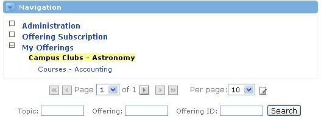

The Navigation Channel allows Collaborative Groupware users to access administrative functionality and access content for specific offerings. It contains three main sections - Administration, Offering Subscription, and My Offerings.

Administration
The Administration link reveals a number of channels related to the management of user accounts, roles and permissions, topics, offerings, and importing capabilities. A user without admin permissions may be permitted to change their password and email address here, but the remainder of functionality will likely be reserved for users with administrative duties.
The channels offered from the Administration link within the Navigation channel include:
Offering Subscription
The Offering Subscription link leads to the Offering Subscription Channel, where a user can search for offerings by Topic Name, Offering Name, or Offering ID. Once the search returns a list of the available offerings, the user can pursue the enrollment process.
My Offerings
The My Offerings link is only visible to users who are enrolled in and/or sponsors of at least one offering. If a user is not enrolled in any offerings, the link will not show up in the Navigation channel.
|
When the My Offering link is visible, the channel also displays a linked list of all enrolled offerings for that particular user. Users can see the specific offering-related channels by clicking on any of the offering links. |